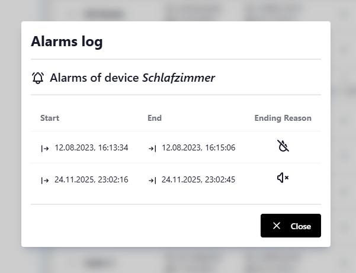

Device Management¶
The Device Management page provides a centralized interface for configuring and monitoring all Genius smoke detector devices connected to your gateway. This page allows you to add, edit, and delete smoke detectors, view their alarm history, organize them through drag-and-drop, and manage device configurations via export/import functionality.
{kind=link}
Access Requirements
Device Management is only accessible to users with administrator privileges. The gateway must be connected to at least one Genius smoke detector to display device information.
Device List Overview¶
The device list displays all registered Genius smoke detectors in a structured table format with the following columns:
Location¶
The assigned location name for each detector (e.g., "Living Room", "Bedroom"). If no location has been assigned, the device shows "Unknown location" in italicized gray text.
Smoke Detector¶
Model name and status of the smoke detector component:
- Model: The smoke detector model (e.g., "Genius Plus X"), or "Unknown model" in italics if not yet identified
- Status: Shown after acoustic readout - OK if no faults, Fault with fault details in tooltip, or "Status not available" if no readout has been performed. The status indicator is greyed out if the last readout is more than one year old.
Radio Module¶
Model name and status of the radio communication module:
- No radio module: shown if the device has no radio module or serial number
- Model: The radio module model (e.g., "FM Basis X"), or "Unknown model" in italics
- Status: Same as smoke detector status - OK / Fault / not available, based on readout data
Alarms¶
Alarm statistics for the device:
- Count: Total number of recorded alarms
- Last Alarm: Date of the most recent alarm event (displayed if any alarms exist)
Service¶
Acoustic readout status icon:
- - Readout performed and up to date (within the last year)
- - Last readout is more than 1 year ago
- - No acoustic readout performed yet
When the device has a radio module, a signal-strength icon also appears here, showing its direct-link quality from the last Signal Probe Discovery.
Manage¶
Action buttons for device operations:
- Alarm Log: View detailed alarm history (only visible if alarms exist)
- Device Details: View full readout data and trigger a new acoustic readout
- Edit: Modify device configuration
- Delete: Remove device from the system
Initial Setup¶
When you first access the Device Management page with no smoke detectors configured, you'll see a helpful message:
No smoke detectors configured yet.
Click the "+" button to add your first smoke detector.
You can proceed to add a new smoke detector by either:
- Manual Registration: Explicitly add smoke detectors you've configured (recommended for planned installations)
- Automatic Discovery: Enable automatic device registration in Gateway Settings, then trigger any smoke detector-the gateway will automatically register the device when it receives an alarm packet
Reordering Devices¶
You can change the display order of devices using drag-and-drop functionality:
- Click and hold the grip icon () on the left side of any device row
- Drag the device to the desired position in the list
- Release to drop the device in its new position
- The new order is automatically saved to the gateway
This feature is useful for organizing devices by floor level, room priority, or any custom arrangement that suits your needs.
Viewing Alarm History¶
Each device maintains a log of all alarm events. To view the alarm history:
- Click the Alarm Log button in the device's row
-
The Alarm Log dialog displays a table with the following information for each alarm:

- Start: Date and time when the alarm was triggered
- End: Date and time when the alarm ended (only for resolved alarms)
- Ending Reason: How the alarm was resolved:
- Automatic: Smoke detector no longer detected smoke
- Manual: User manually stopped the alarm via the web interface
- Cleared by import: Alarm was cleared during a device configuration import
Active alarms show "No data" for the end time and no ending reason icon.
Adding a New Detector¶
Manually adding a new Detector¶
To register a new Genius smoke detector:
- Click the Add smoke detector button in the top-right corner
-
The "Add smoke detector" dialog opens with empty fields
-
Fill in the required information as follows:
Location
Enter a descriptive name for the detector's location (1-40 characters). This helps identify the device in the list and alarm notifications.Smoke Detector Component
- Model: Select the smoke detector model (currently Genius Plus X)
- Serial Number: Enter the unique serial number (
1 - 4294967294) - Production Date: Select the manufacturing date from the date picker
Radio Module Component
- Model: Select the radio module model (currently FM Basis X)
- Serial Number: Enter the unique serial number (
1 - 4294967294) - Production Date: Select the manufacturing date from the date picker
-
Click Save to add the device
{kind=link}
The system validates all inputs and prevents duplicate serial numbers for both smoke detectors and radio modules.
Automatic Device Discovery¶
In addition to manually adding devices, the Genius Gateway can automatically discover and register smoke detectors when they trigger an alarm. This feature requires the "Process alerts from unknown smoke detectors" setting to be enabled in Gateway Settings.
How Automatic Discovery Works¶
When an unknown smoke detector triggers an alarm:
- The gateway receives the alarm packet containing the detector's serial number and radio module serial number
- If automatic discovery is enabled, the gateway creates a new device entry with:
- Smoke detector serial number from the alarm packet
- Radio module serial number from the alarm packet
- Location set to "Unknown location"
- Model type set to "Unknown" for both components
- Production dates unset (shown as "Unknown")
- Registration type marked as Automatic
- The alarm is immediately processed and displayed in the system
- MQTT notifications are published for the new device (if MQTT is enabled)
Updating Automatically Discovered Devices¶
Automatically discovered devices appear in the device list with "Unknown location" and can be edited like any other device (see Editing a Detector). When editing these devices:
- Location: Replace "Unknown location" with a descriptive name for proper alarm identification
- Model Types: Will be automatically set to the default models (Genius Plus X and FM Basis X) when opening the edit dialog
- Production Dates: Add the actual manufacturing dates if known
- Serial Numbers: Verify the automatically captured values are correct (if possible)
Best Practice
Review and update automatically discovered devices promptly to ensure proper identification during future alarms. A descriptive location name is especially important for alarm notifications.
Device Registration Type
The registration type indicator ( Manual vs Automatic) shows how each device was originally added and persists even after editing the device details.
Adding via Acoustic Readout¶
The gateway can register a new smoke detector by capturing its acoustic (SmartSonic) readout directly in the browser. All device identity fields - serial numbers, model, and production date - are read from the signal automatically.
HTTPS required
The browser's microphone API is only available over a secure (HTTPS) connection. The button is shown in warning color and disabled on plain HTTP.
To add a device via acoustic readout:
- Click the Add smoke detector via acoustic detection button in the top-right corner
- The Acoustic Device Detection dialog opens and begins listening
- Hold a phone or laptop microphone near the smoke detector and trigger its acoustic readout (refer to the detector's manual for how to initiate the tone)
-
Once the signal is captured and decoded, one of the following outcomes occurs based on whether the detected serial numbers are already known:
Situation Outcome Both serial numbers are new Add dialog opens pre-filled - enter a location and save Smoke detector SN already exists Confirmation to update that device's readout data (location and alarm history preserved) Radio module SN already assigned to a different device Confirmation to replace that device (alarm history of the previous device is lost) Each SN belongs to a different existing device Confirmation to delete both conflicting devices and create a new combined entry -
After confirming, the device record is saved with registration type Acoustic
Fields that were read from the acoustic signal (model, serial number, production date) are locked and cannot be changed after saving. Only the Location name needs to be entered manually.
Acoustic readout signal details
See Acoustic Readout in the Reverse Engineering section for a description of the signal modulation, framing, and payload format.
Signal Probe Discovery¶
The gateway can actively survey which radio modules are within direct radio range and how strong their link is - and register any new ones it finds. It broadcasts a ConfigCheckProbe direct-range reachability probe that every directly reachable module answers once, reporting its radio-module serial number, alarm line ID, and signal strength (RSSI). The probe is not relayed through the mesh, so only modules the gateway hears directly respond.
{kind=link}
What it is useful for
Installation and diagnostics: check which module is directly reachable, compare signal strength across the property, and discover modules in direct range that are not yet registered - including neighbouring installations on other alarm lines.
Running a survey¶
- Click the Discover directly reachable detectors button in the top-right toolbar
- A Signal probe progress dialog opens and fills in live as modules answer. The whole survey takes about a minute
- Responders are grouped as they arrive:
- Known devices - modules already in your device list; their signal strength and range-test timestamp get recorded
- New nearby - modules that answered but are not yet registered (discovered devices)
- While the survey is running, you can:
- Stop probing - finish early but keep everything heard so far
- Cancel - abort and discard the survey
-
After the survey finishes (or after stopping it) you can:
- Add a new nearby module as a device - opens the Adding a New Detector dialog pre-filled with the radio-module serial number
- Add alarm line for a line ID that showed up but is not configured yet - opens the Adding a New Alarm Line dialog with the ID locked and its acquisition source set to SignalProbe
-
On completion a summary notification reports how many modules responded, how many known devices were updated, and how many new nearby modules were found; the device list refreshes so the new readings appear
{kind=link}
Signal strength indicator¶
Each device with a radio module shows a signal icon in the Service column reflecting its last range test:
| Icon | State | Meaning |
|---|---|---|
| (0-3 bars) | Reached | Heard directly. Bars and tooltip show quality (with the exact dBm and test date):
|
| Out of range | Included in a survey but did not answer directly | |
| Not tested | Never included in a range test yet |
The measured signal and last range-test date also appear in the Device Details dialog and in the PDF report (Direct Link / Range Test section).
Probe protocol details
See ConfigCheckProbe in the Reverse Engineering section for the on-air request/response framing and repetition behaviour.
Viewing Device Details¶
Click the Device Details button in a device's row to open the Device Details dialog. It consolidates all available information about a detector in one place.
{kind=link}
- General - location, registration type, and last acoustic readout timestamp. If a readout exists, the age is shown alongside the date (e.g.
15.03.2026 10:00 (37d ago)). A icon indicates a recent readout; indicates a stale one (> 1 year). - Smoke Detector - model, serial number, production date and age, and (after readout) full diagnostic status: detector fault, battery, dirt forecast, chamber drift, warranty flags with individual flag breakdown, plus lifetime statistics (last self-test, last alarm, alarm counts, deinstallation count, storage hours).
- Radio Module - model, serial number, and (after readout) radio status with individual state flags, interference level, alarm line ID and character, and DIP switch configuration.
The dialog also provides an Update button () to trigger a new acoustic readout for that device directly, without leaving the dialog.
Acoustic readout internals
For a detailed description of the signal modulation, framing, and the full payload field reference, see Acoustic Readout in the Reverse Engineering section.
Editing a Detector¶
To modify an existing detector's configuration:
- Click the Edit smoke detector button in the device's row
-
The "Edit smoke detector" dialog opens with the current device information
-
Modify any fields as needed:
- Location name
- Smoke detector serial number or production date (only if device has been added manually)
- Radio module serial number or production date (only if device has been added manually)
- Click Save to apply changes
{kind=link}
Unique Serial Numbers
The system ensures that modified serial numbers remain unique across all devices.
Deleting a Detector¶
To remove a detector from the system:
- Click the Delete smoke detector button in the device's row
- A confirmation dialog appears showing the device's serial number and location
- Click Yes to confirm deletion, or Abort to cancel
Deletion is Permanent
Deleting a device removes all associated data including alarm history. This action cannot be undone. Consider exporting your configuration before deleting devices.
Deleting All Detectors¶
To remove every smoke detector from the system in one operation:
- Click the Delete all smoke detectors button in the top-right corner
- A confirmation dialog appears stating the number of detectors that will be deleted and that all alarm history will be lost
- Click Delete all to confirm, or Cancel to abort
Export a backup first
Deleting all devices removes every device and its complete alarm history in a single, irreversible operation. Export your configuration using the save button before proceeding.
The button is disabled and cannot be clicked when no devices are configured.
Exporting Configuration¶
You can export your complete device configuration to a JSON file:
- Click the Save smoke detector configuration to file button in the top-right corner
- Rename and save the file to the desired location
The export includes all device information and alarm history. This feature is useful for:
- Creating backups before making configuration changes
- Migrating device configurations to a new gateway
- Archiving alarm history for documentation purposes
Importing Configuration¶
Import Replaces All Devices
Importing a configuration file completely replaces your current device list. Export your current configuration before importing if you want to preserve it.
You can import a previously exported device configuration:
- Click the Load smoke detector configuration from file button in the top-right corner
- Select a valid configuration file from your computer
- The system validates the file format and migrates it if needed (older backup formats are automatically upgraded)
- If any device in the file is marked as alarming, a dialog asks how to handle the alarm state:
- Keep Alarm State - imports as-is; connected integrations (e.g. Home Assistant) may trigger automations (useful for testing)
- Clear Alarm State - resets the alarm flag on all affected devices and closes open alarm log entries with a
Cleared by importending reason
- A progress dialog shows the import status. For larger files the upload is split into chunks automatically and may take several seconds - a progress bar shows how many chunks have been sent. Wait for the Finalizing step to complete before navigating away
- All existing devices are replaced with the imported configuration once the gateway confirms the commit
Generating a PDF Report¶
Click the Generate PDF Report button in the toolbar to produce a printable audit document. A progress dialog steps through fetching data and building the file; the PDF downloads automatically when complete.
The property name, address, and customer name printed on the cover page are configured in Gateway Settings → Report Settings. Leaving those fields blank generates a report without a property header.
Cover Page¶
- Gateway identification
- Property name, address, and customer name
- Generation timestamp
- Summary table of all registered smoke detectors (location, model, serial number, last acoustic readout date)
Per-Device Pages¶
One page per registered smoke detector:
- Identity: location, model, registration type, smoke detector and radio module serial numbers, production date and device age
- Diagnostic data (only if an acoustic readout has been performed):
- Smoke chamber: sensor status, drift value, contamination forecast, warranty flags
- Battery: voltage and state
- Statistics: alarm count, last alarm date, last self-test date, deinstallation count, storage hours
- Radio module: line ID, radio state and switch masks, interference level, DIP switch configuration
- Alarm history: full log of recorded alarm events with start time, end time, and ending reason
Related Documentation¶
- Gateway Settings - Configure alarming behavior, alarm line topology, and report header fields
- MQTT Integration - Monitor device status and alarms via MQTT
- System Status - View overall gateway health and connectivity